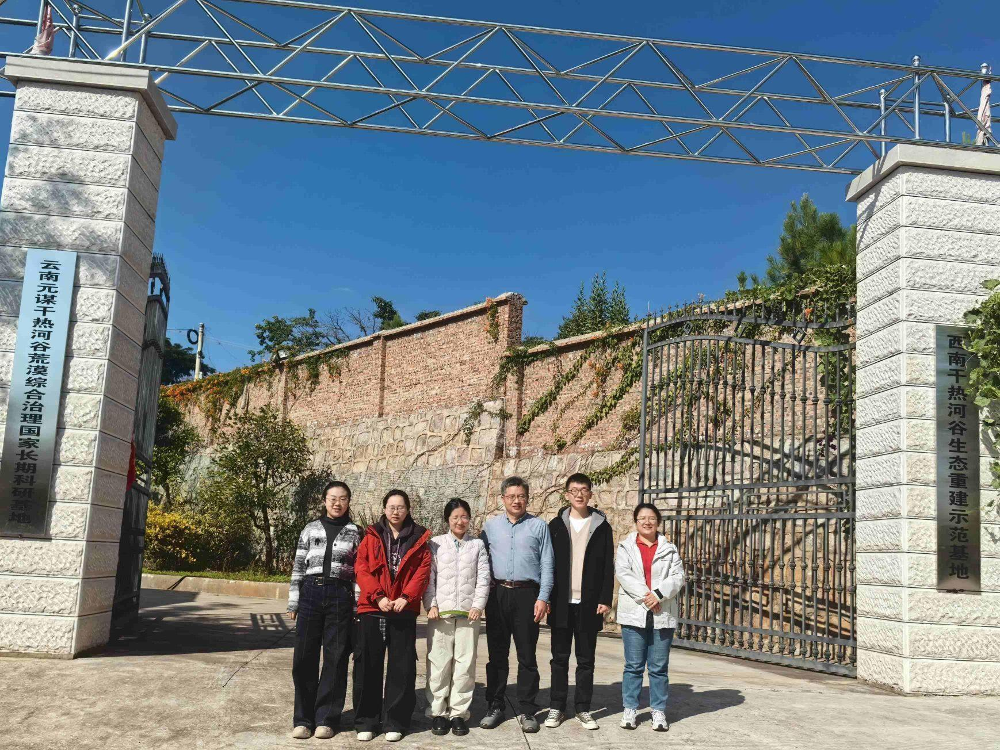
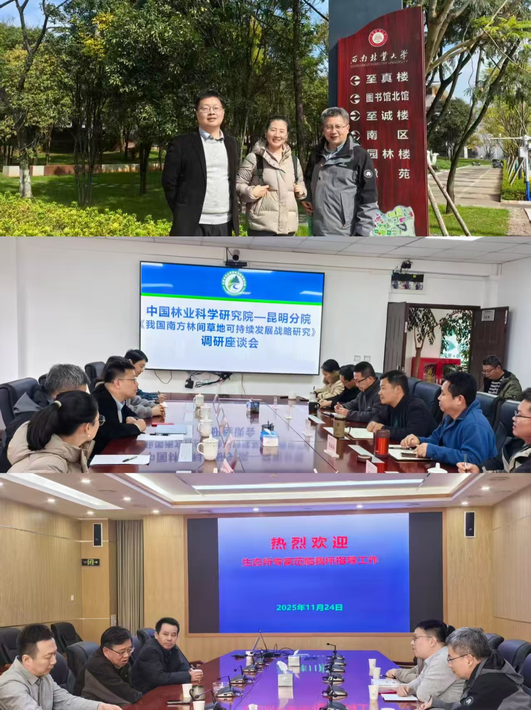
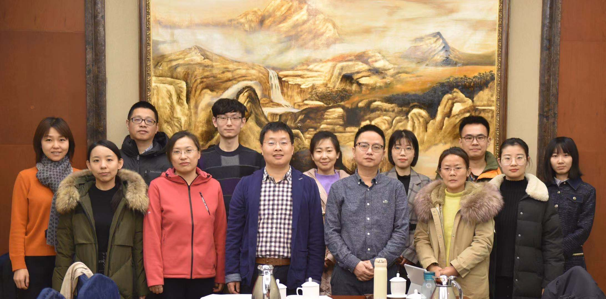
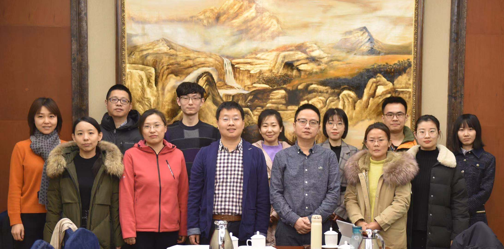

Datasets
课题组已发表数据集.
中国东部沙地温带稀树草原分布数据集
《中国科学·地球科学》

News
-

2025.11
课题组成员赴国家林草局元谋荒漠生态站考察干热河谷林草现状
2025年11月25日课题组成员李敏和庄杰博士后、刘莹子和蔡依霏博士生、夏双双硕士生及中国林科院生态所姚斌研究员赴国家林草局荒漠生态系统定位观测元谋站，实地考察了云南干热河谷林草现状。在站点科研人员的陪同下查看了林间草地的植被群落结构等现场情况，并进行了云南稀树草原的无人机数据采集工作，也为后续分析南方林间草地的区域适配性发展策略、制定差异化的资源利用与保护方案提供了关键的实地依据。
-

2025.11
课题组成员赴云南多单位调研南方林间草地资源
2025年11月24日课题组成员王锋研究员、蔡依霏博士生及中国林科院生态所姚斌研究员、曹晓明副研究员赴西南林业大学、云南省林业调查规划院、中国林科院高原研究所调研了南方林间草地资源分布和利用情况，调研过程中，我院人员与各单位相关负责人围绕南方林间草地的生态价值、现存利用瓶颈等议题展开深入交流，实地查看了林间草地资源数据库、植被样本展示区，并结合云南省山地林草复合系统的特色案例，探讨了可持续经营的技术路径与政策建议。各方还就数据共享、联合科研等合作方向达成初步共识，为《我国南方林间草地可持续发展战略研究》课题积累了丰富的区域实践素材，也为后续形成更具针对性的战略方案奠定了基础。
-

2025.11
课题组成员与中国林科院生态所专家赴昆明自然资源综合调查中心开展技术交流与支部共建活动
2025年11月23日下午课题组成员王锋研究员、李敏和庄杰博士后、刘莹子和蔡依霏博士生、夏双双硕士生及中国林科院生态所姚斌研究员、曹晓明副研究员和王黎黎老师前往中国地质调查局昆明自然资源综合调查中心进行交流学习，昆明调查中心展示了其在西南区域林草资源遥感监测、土壤碳汇评估等方面的技术积累与数据成果，课题组实地参观了该中心的自然资源调查实验室，详细了解了林间草地植被-土壤协同监测的设备与技术流程，为后续跨单位数据对接、方法互补明确了方向。随后，双方还就党支部建设情况进行了交流，加深了解。
-
•
•
•
Our Team
左右滑动查看图片
 

UAV-HiRAP是中国林业科学研究院荒漠化研究所的实验室。
实验室应用当前最新技术例如机器学习、无人机等，致力于发展观测、监测、评估和管理干旱区生态系统的新方法。
实验室提供实习生、硕士生、博士生和博士后位置。欢迎来自海内外学者的跨学科合作！
地址：北京市海淀区青龙桥街道槐树居路十号荒漠化研究所；E-mail：wangfeng@caf.ac.cn
UAV-HiRAP lab is a research group affiliated with Institute of Desertification Studies, Chinese Academy of Forestry. It is dedicated to develop the new method to observe, monitor, assess, and manage the drylands ecosystem by applying the state of the art technology such as artificial intelligence(AI), unmanned aerial vehicles(UAV), satellite and model. We offer Internship, Masters, Ph.D, and Postdoc positions and welcome research collaborations across disciplines. Address: No.10,Huaishu Road, Haidian District, Beijing; E-mail: wangfeng@caf.ac.cn
Publications
Papers
- 杨凯捷, 丛巍巍, 陆森, 冯益明, 王锋. 2025. 温带榆树稀树草原碳通量变化特征及环境因子的影响. 林业科学, 61(9). doi ：10.11707/j.1001−7488.LYKX20230466.
- Cong W., Yang K., Lu S., Zhao T., Wang F*., Lu Q. 2025. Prediction of sap flux of elm (Ulmus pumila var. sabulosa) by solar induced fluorescence in a temperate savanna, China. Journal of Forestry Research, 36(89). doi: 10.1007/s11676-025-01890-3.
- Yang K., Cai Y., Li X., Cong W., Feng Y., Wang F*. 2025.Seasonal Variations in the Relationship Between Canopy Solar-Induced Chlorophyll Fluorescence and Gross Primary Production in a Temperate Evergreen Needleleaf Forest. Forests, 16(893). doi: 10.3390/f16060893.
- 蔡依霏, 王锋*, 潘绪斌, 张方敏, 任国玉, 卢琦.2025.中国荒漠化潜在发生区域数据集（1930–2100年）[J/OL]. 中国科学数据,10(02):577-588. doi: 10.11922/11-6035.csd.2024.0096.zh.
- Li X., Duan T., Yang K., Yang B., Wang C., Tian X., Lu Q., Wang F*. 2025. Mapping Temperate Savanna in Northeastern China Through Integrating UAV and Satellite Imagery. Scientific Data 12, 671. https://doi.org/10.1038/s41597-025-05012-w.
- 崔桂鹏, 王锋, 卢琦. “三北”工程建设成就与战略转型. 中国科学: 生命科学, 2025, 55(4): 829–831. DOI: 10.1360/SSV-2025-0017.
- 李晓雅，王锋*，段涛，杨凯捷，杨斌，王春梅，田昕，卢琦*. 2025. 中国东部沙地温带稀树草原的分布与制图.中国科学: 地球科学, 55(1): 126–140. doi: 10.1360/SSTe-2024-0042.
- Li X., Wang F*., Duan T., Yang K., Yang B., Wang C., Tian X., Lu Q*. 2025. Distribution and mapping of temperate savanna in the sandy lands of eastern China. Science China Earth Sciences, 68(1): 128–141. https://doi.org/10.1007/s11430-024-1449-y.
- 崔桂鹏, 党宏忠, 熊伟, 王锋, 李永华, 姚斌, 崔梦淳, 孔维远, 卢琦.2025. 对“三北”工程区退化林修复策略的思考. 林业科学[J], 61(1): 10-16 doi:10.11707/j.1001-7488.LYKX20240502.
- 蔡依霏, 王锋*, 潘绪斌, 张方敏, 任国玉, 卢琦. 2024.中国荒漠化潜在发生区域150年变迁: 过去、现在和未来. 科学通报, 69: 4637-4650. doi: 10.1360/TB-2023-1244.
- Cai Y*. 2024. Healthy environment in research beneficiaries speak. Science. 384(6691): 27. doi: 10.112 6/science.adp2180.
- 张宇昕, 杨凯捷, 丛巍巍, 陆森, 张劲松, 王锋*. 2024. 基于SCOPE模型的樟子松人工林日光诱导叶绿素荧光及初级生产力模拟与评估. 陆地生态系统与保护学报, 4(2): 1-13. doi: 10.12356/j.2096-8884.2024-0004.
- 李晓雅, 田昕, 段涛, 曹晓明, 杨凯捷, 卢琦, 王锋*. 2023. 融合无人机和卫星影像的温带疏林草原木本和草本植物覆盖度遥感估算. 遥感学报, 27(9): 2139–2152. doi: 10.11834/jrs.20210605.
- Chen, M., Yang, B., Wang, F., Guo, Y., & Duan, T. 2023. Identification of open-pit mines and surrounding vegetation on high-resolution satellite images based on improved bilateral segmentation network semantic segmentation model. Journal of Applied Remote Sensing, 17(4). 044518
- Cheng X., Hu M., Zhou Y., Wang F., Liu L., Wang Y., Huang H., Zhang J. 2022. The divergence of micrometeorology sensitivity leads to changes in GPP/SIF between cork oak and poplar. Agricultural and Forest Meteorology, 326: 109189. doi: 10.1016/j.agrformet.2022.109189.
- Shi S., Cong W*., Lu S., Zhao T., Wang F*., Lu Q. 2022.Can SIF and NPQ be used in the photosynthesis rate simulation of plants subjected to drought? Environmental and Experimental Botany, 203: 105067. doi: 10.1016/j.envexpbot.2022.105067.
- Cong W., Li X., Pan X., Liu X., Lu Q., Wang F*. 2022. A new scientific framework of dryland ecological quality assessment based on 1OAO principle. Ecological Indicators, 136: 108595. doi: 10.1016/j.ecolind.2022.108595.
- Cong W., Yang K., Wang F*. 2022. Canopy solar-induced Chlorophyll Fluorescence and its link to transpiration in a temperate evergreen needleleaf forest during the fall transition. Forests, 13(1): 74. doi: 10.3390/f13010074.
- Zhang Y., Zhang Q., Liu L., Zhang Y., Wang S., Ju W., et al. 2021. ChinaSpec: A network for long-term ground-based measurements of solar- induced fluorescence in China. Journal of Geophysical Research: Biogeosciences, 126: e2020JG006042. doi: 10.1029/2020JG006042.
- Cheng X., Zhou Y., Hu M., Wang F., Huang H., Zhang J. 2021. The links between canopy Solar-Induced Chlorophyll Fluorescence and gross primary production responses to meteorological factors in the growing season in deciduous broadleaf forest. Remote Sensing, 13(12): 12. doi：10.3390/rs13122363.
- Wu Y., Zhang J., Wang F., Song Y., Ji J., 2021. Simulations of spatial patterns and species distributions in sandy land using unmanned aerial vehicle images. Journal of Arid Environments, 186: 104410. doi: 10.1016/j.jaridenv.2020.104410.
- Wang F*., Pan X., Gerlein‐Safdi C., Cao X., Wang S., Gu L., Wang D., Lu Q*. 2020. Vegetation restoration in Northern China: A contrasted picture. Land Degradation & Development, 31(6): 669–676. doi: 10.1002/ldr.3314.
- Gerlein-Safdi C., Keppel-Aleks G., Wang F., Frolking S., Mauzerall D. 2020. Satellite monitoring of natural reforestation efforts in China’s drylands. One Earth, 2(1): 98–108. doi: 10.1016/j.oneear.2019.12.015.
- Kattge J., Wang F., …, Wirth C. 2020. TRY plant trait database – enhanced coverage and open access. Global Change Biology, 26(1): 119–188. doi: 10.1111/gcb.14904.
- Wang H., Han D., Mu Y., Jiang L., Yao X., Bai Y., Lu Q., Wang F*. 2019. Landscape-level vegetation classification and fractional woody and herbaceous vegetation cover estimation over the dryland ecosystems by unmanned aerial vehicle platform. Agricultural and Forest Meteorology, 278: 107665. doi: 10.1016/j.agrformet.2019. 107665.
- 王锋*, 卢琦. 2019. 沙地樟子松散生单木的天然更新幼苗空间分布模型. 林业科学, 55(8): 1-8.
- 姚雪玲, 姜丽娜, 李龙, 王锋, 吴波, 郭秀江. 2019. 浑善达克沙地6种灌木生物量模拟. 生态学报, 39(3)：905-912.
- 吴隐, 韩东, 姚雪玲, 张静, 王锋*. 2019. 基于无人机高分辨率航空影像的榆树疏林空间分布格局及其地形效应. 热带地理, 39(4)：531-537.
- Wu R, Cong W, Li Y, Li S, Wang D, Jia Z*, Wang F*. 2019. The Scientific Conceptual Framework for Ecological Quality of the Dryland Ecosystem: Concepts, Indicators, Monitoring and Assessment. Journal of Resources and Ecology, 10(2): 196-201.
- Wang S, Wang J, Zhang L, Xiao Z, Wang F, Sun N, Li D, Chen B, Chen J, Li Y, Wang X, Wang M. 2019. A National Key R&D Program: Technologies and and Guidelines for Monitoring Ecological Quality of terrestrial ecosystems in China. Journal of Resources and Ecology, 10(2): 105-111.
- 韩东, 王浩舟, 郑邦友, 王锋*. 2018. 基于无人机和决策树算法的榆树疏林草原植被类型划分和覆盖度生长季动态估计. 生态学报. 38(18): 6655⁃6663.
- Mu Y, Wang F*, Zheng B, Guo W, Feng Y*. 2018. A rapid image-based method to determine the morphological characteristics of gravels on desert pavement. Geomorphology. 304, 89–98.
- 穆悦, 冯益明, 高翔, 韩东, 吴隐, 张谱. 2018. 基于无人机图像的戈壁表面砾石特征变化研究. 林业科学研究, 31(2):55-62.
- Feng Wang*. 2017. Artificial intelligence in research: UAV and artificial intelligence. Science. 357: 28-29.
2025
2024
2023
2022
2021
2020
2019
2018 2017
Conference
- 蔡依霏.New shifting and redistribution of the future global dryland.GEOSUS 2025 International Workshop on Geography and Sustainability.陕西西安.2025年10月17-20日.
- 王锋. Combating Desertification and Sustainable Development in North-East Asia. 2025 Sustainability Dialogue: Climate Actions: Billions of Trees. Mongolia. 2025年6月5-8日.
- 王锋. 科尔沁和浑善达克沙地生态修复与系统治理. 第十届青年地学论坛. 中国合肥. 2025年5月9-13日.
- （优秀学生报告）蔡依霏. 中国“三北”地区生态恢复优先区与风险区识别与评价. 第十届青年地学论坛. 中国合肥. 2025年5月9-13日.
- 李敏. 基于空天地协同平台的落叶松结构表型获取与遗传分析. 第十届青年地学论坛. 中国合肥. 2025年5月9-13日.
- 刘莹子. 降水对温带稀树草原木本和草本植被覆盖度的累积滞后效应. 第十届青年地学论坛. 中国合肥. 2025年5月9-13日.
- 王锋. 科尔沁和浑善达克沙地生态修复和系统治理. 第十七届中国林业青年学术年会. 中国长春. 2025年4月11-14日.
- 李晓雅. 科尔沁、浑善达克沙地温带稀树草原单木结构参数提取研究. 荒漠化所2024年度学术年会. 中国北京. 2025年1月14日.
- 蔡依霏. 全球干旱地区的地理分布格局及演变规律（1961-2050）. 荒漠化所2024年度学术年会. 中国北京. 2025年1月14日.
- 夏双双. 基于无人机遥感的榆树疏林草原十年植被覆盖时空动态. 荒漠化所2024年度学术年会. 中国北京. 2025年1月14日.
- 李晓雅. 从分布格局到单木结构:中国东部温带稀树草原的结构特征研究. 第十六届中国林业青年学术年会. 中国武汉. 2024年11月15日-17日.
- 蔡依霏. 中国“三北”地区荒漠化潜在地理分布研究. 第十六届中国林业青年学术年会. 中国武汉. 2024年11月15日-17日.
- 王锋. 中国东部沙地温带稀树草原：定位监测、区域分布及经验启示. 内蒙古自治区林业科学研究院举办建院70周年暨三北地区生态保护与防沙治沙学术研讨会. 中国呼和浩特. 2024年11月8日-10日.
- 王锋. 科尔沁、浑善达克沙地稀树草原分布与成因研究. 第二十三届生态学大会. 中国沈阳. 2024年10月25日-27日.
- 夏双双. 基于无人机遥感的榆树疏林草原十年植被覆盖时空动态. 第二十三届生态学大会. 中国沈阳. 2024年10月25日-27日.
- 王锋. 黄河流域水资源承载力下林草资源优化配置研究. 第五届国际三角洲论坛暨第二届黄河国际人才周活动. 中国东营. 2024年9月25-27日.
- 王锋. 破解中国东部沙地温带稀树草原的分布与成因. 第九届青年地学论坛.中国厦门. 2024年5月18-20日.
- 李晓雅. 基于深度学习算法和高分卫星的中国东部沙地温带稀树草原单木识别研究. 第九届青年地学论坛. 中国厦门. 2024年5月18-20日.
- 蔡依霏. 中国荒漠化潜在发生区域150年变迁：过去、现在和未来. 第九届青年地学论坛.中国厦门. 2024年5月18-20日.
- 杨凯捷. 半干旱地区两种典型生态系统的碳通量及其环境影响因子.中国厦门. 2024年5月18-20日.
- 杨凯捷. 科尔沁、浑善达克沙地温带稀树草原分布与制图研究榆树稀树草原碳水通量变化特征及环境因子的影响. 荒漠化所2023年度学术年会. 中国北京. 2024年1月25日.
- 李晓雅. 科尔沁、浑善达克沙地温带稀树草原分布与制图研究. 荒漠化所2023年度学术年会. 中国北京. 2024年1月25日.
- 杨凯捷. 中国温带稀树草原碳水循环及能量收支平衡. 第十五届中国林业青年学术年会. 中国沈阳. 2023年11月17日-11月19日.
- 蔡依霏. 全球变化背景下干旱区的迁移：现状、过去和未来. 第十五届中国林业青年学术年会. 中国沈阳. 2023年11月17日-11月19日.
- 蔡依霏.中国荒漠化潜在发生区域150年变迁：过去、现在和未来. 第七届陆地生态系统青年学者研讨会. 中国西藏 2023年7月28日-8月2日.
- 李晓雅. 中国东部沙地温带稀树草原识别与制图. 第一届干旱区生态和地理青年学者论坛. 中国乌鲁木齐. 2023年4月25-27日.
- 杨凯捷. 季节变更对樟子松日光诱导叶绿素荧光与冠层光合作用关联的影响. 第一届干旱区生态和地理青年学者论坛. 中国乌鲁木齐. 2023年4月25-27日.
- 张宇昕. 针叶叶片荧光辐射传输模型的构建与樟子松荧光模拟. 中国乌鲁木齐. 2023年4月25-27日.
- 王锋. 榆树疏林草原结构-功能“星-空-地”一体化监测. 第七届青年地学论坛. 脆弱生态系统保护与修复分会场. 中国贵阳. 2021年7月9-11日.
- 杨斌. 基于卷积神经网络的榆树疏林单木检测和分割研究. 第七届青年地学论坛. 脆弱生态系统保护与修复分会场. 中国贵阳. 2021年7月9-11日.
- 杨凯捷. 季节变更对樟子松日光诱导叶绿素荧光与冠层光合作用关联的影响. 第七届青年地学论坛. 脆弱生态系统保护与修复分会场. 中国贵阳. 2021年7月9-11日.
- 李晓雅. 温带疏林草原的分布与制图研究. 第七届青年地学论坛. 脆弱生态系统保护与修复分会场. 中国贵阳. 2021年7月9-11日.
- 王锋. 荒漠-草原生态系统“星-空-地”一体化监测. 第27个世界防治荒漠化与干旱日纪念活动暨荒漠化防治高质量发展学术论坛——青年论坛. 中国西安. 2021年6月15-17日
- 李晓雅. 从无人机到卫星——基于机器学习的温带疏林草原木本和草本植被盖度估算. 第19届中国生态学大会生态遥感分会场. 2020年11月21-23日.
- 王锋. 荒漠-草原大样地生态监测与技术进展. 2020年度荒漠-草原观测研究野外站联盟工作会议暨学术研讨会. 中国乌海. 2020年10月15-18日.
- Feng Wang. Sun-induced chlorophyll fluorescence of four temperate tree species under short-term heat events. AGU 2019. San Francisco, CA, USA. 9-13 December, 2019.
- 王锋. 基于无人机和机器学习的干旱区植被检测工具及在生态学野外取样设计的启示. 第六届青年地学论坛. 2019年10月12-16日.
- 韩东. 高强度放牧对温带半干旱区榆树疏林木本植物的破坏更明显. 第六届青年地学论坛. 2019年10月12-16日.
- 姬婕. 基于无人机平台的浑善达克沙地榆树疏林草原植被生物量估算. 第六届青年地学论坛. 2019年10月12-16日.
- 王锋. Sun-induced chlorophyll fluorescence detects the response of tree species to extreme heat events. EGU General Assembly 2019. Vienna, Austria, 12-17 April.
- 王锋. UAV-HiRAP: 基于无人机平台的植被分类和盖度估计工具及在生态学野外取样设计的启示. 第二届无人机生态/地理应用研讨会. 中国广州，2018年12月26-28日.
- 王锋. 植被与荒漠化。中国林业科学研究院“林科讲坛”，2018年12月17日.
- 王锋. UAV-HiRAP: 基于无人机平台的旱地生态系统植被分类和盖度估计工具.第一届植被遥感学术研讨会.中国南京，2018年10月26-28日.
- 韩东. 基于无人机和机器学习算法的榆树疏林草原植被分类和覆盖度动态估计. 第17届中国生态学大会，生态遥感与应用分会. 中国南京，2018年5月4-6日.
- 王锋. 耦合无人机和机器学习算法的沙地植被分类研究. 全国自然地理学大会. 中国南京, 2017年11月20-22日.
- Wang Haozhou. 2017. UAV-HiRAP: A novel method to improve landscape-level vegetation classification and coverage fraction estimation with unmanned aerial vehicle platform. The 12th International Congress of Ecological (INTECOL). Beijing, China, August 21-25, 2017.
- Mu Yue. 2016. The gravel coverage and size of Gobi desert analyzed by a rapid image-based method. IUFRO Regional Congress for Asia and Oceania 2016. Beijing, China, October 24-27, 2016.(海报)
- Wu Yin. 2016. A novel spatially explicit model for sparse forest pattern based on digital terrain data. IUFRO Regional Congress for Asia and Oceania. Beijing, China, October 24-27, 2016. (海报)
Meeting Organization
- 王锋, 潘绪斌, 丛巍巍, 段涛. 第十届青年地学论坛分会场：干旱生态系统观测、实验、模拟与评估. 中国合肥. 2025年5月9-13日.
- 王锋, 高广磊, 赵洋, 张波. 第十七届中国林业青年学术年会荒漠化防治分会场：荒漠化防治与新'三北'工程建设. 中国长春. 2025年4月11-14日.
- 王锋, 高广磊, 赵洋, 张波. 第十六届中国林业青年学术年会荒漠化防治分会场：荒漠化防治与新'三北'工程建设. 中国武汉. 2024年11月15-18日.
- 李新荣, 左小安, 王锋 ,张波. 第二十三届生态学大会分会场：荒漠生态系统结构、功能、过程和稳定性. 中国沈阳. 2024年10月25-27日.
- 王锋, 贾昕, 丛巍巍, 李长嘉. 第九届青年地学论坛分会场：干旱生态系统观测、实验、模拟与评估. 中国厦门. 2024年5月17-20日.
- 王锋. 第一届林草碳汇学术研讨会草地荒漠碳汇分会场.中国北京. 2023年11月27日.
- 王锋, 刘秀萍, 李永华, 王国华. 第六届青年地学论坛分会场：干旱区生态、水文前沿. 中国西宁. 2019年10月12-15日.
Software copyrights
- 无人机高精度影像分析平台[简称: UAV-HiRAP] v3.0 2019. 软著登字第2019SR0286422
- 中国沙地基础地理信息数据平台[简称：GIP-DLC] v2.0 2018. 软著登字第2018SR921265
- 无人机高精度影像分析平台[简称: UAV-HiRAP] v2.0 2017. 软著登字第2017SR558256
- 无人机高精度影像分析平台[简称: UAV-HPIAP] v1.0 2016. 软著登字第2016SR198498
- 中国沙地基础地理信息web系统. 2016. 软著登字第2016SR036010
Invention Patents
- 一种基于无人机的景观尺度植被覆盖度的计算方法及系统：2019.中国，20160913357.8